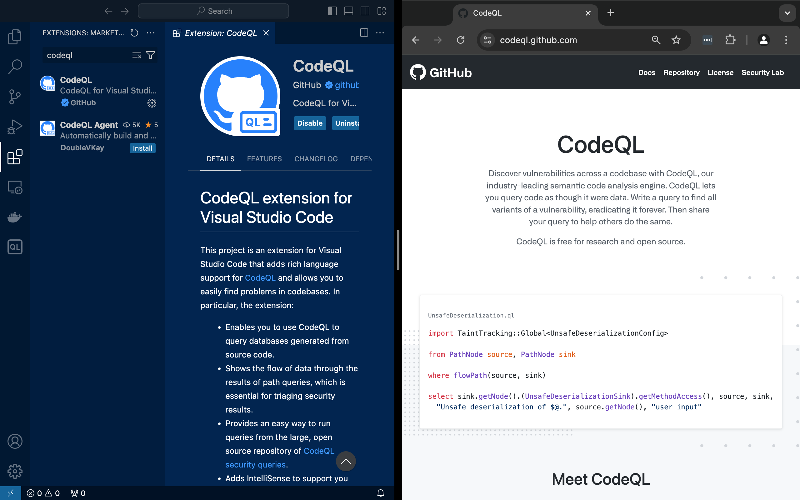
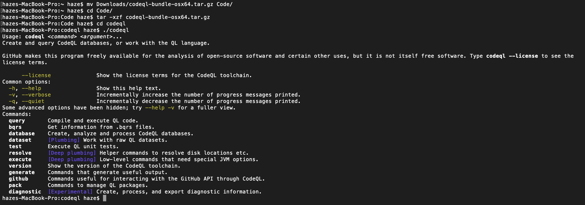
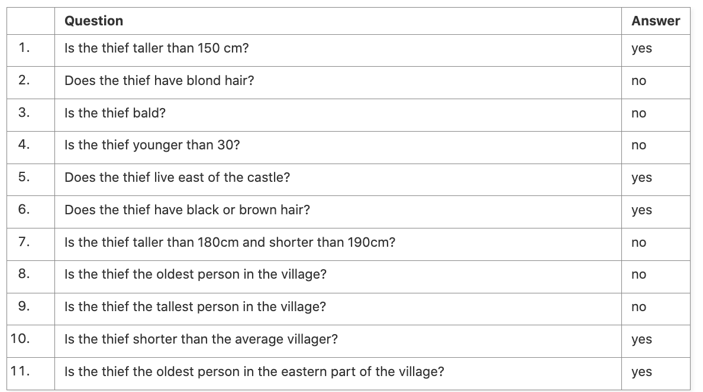
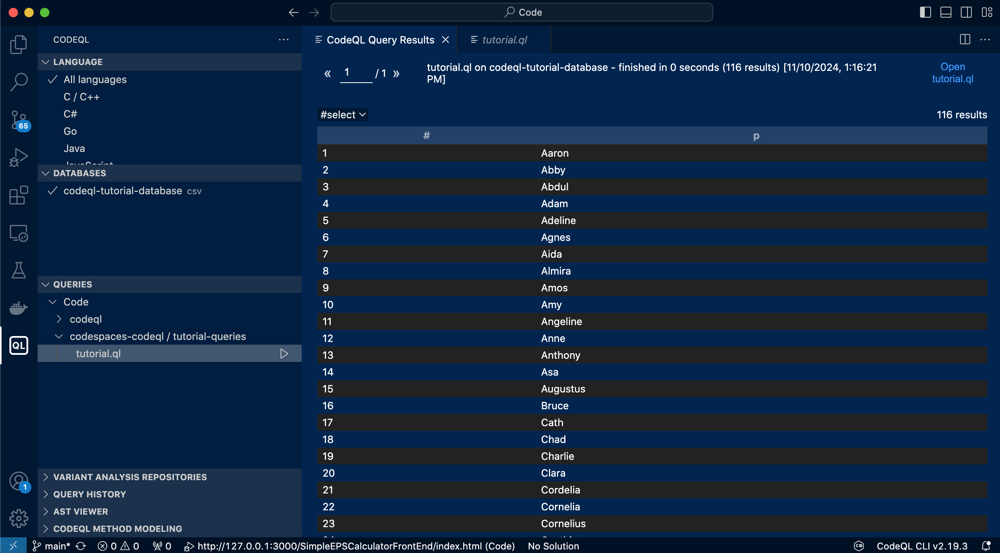
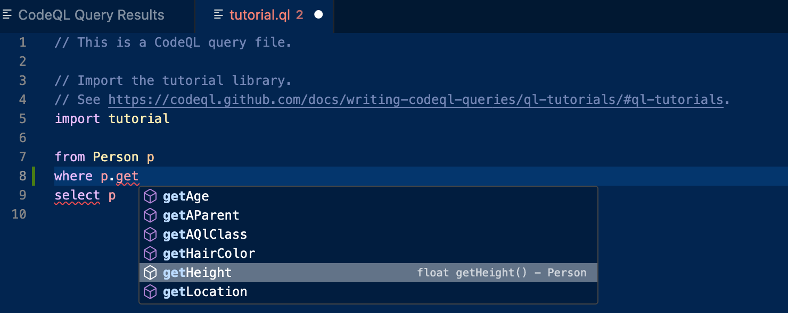
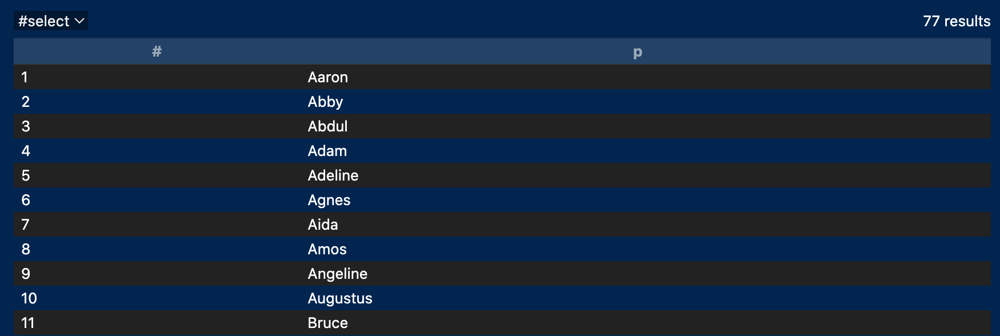
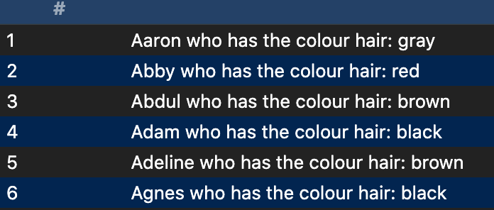

As part of a desire to add another tool to my belt in regards to secure code review, I looked to explore CodeQL. Developed by GitHub and first released to the public around 2020, CodeQL is a "Semantic code analysis engine" that allows you to run SQL-like queries for certain code patterns across a large repository to find bugs.
The beauty of this tool is the freemium model where it's all free if you are running this across public repos. If you are a company however, you can't take this for free, you got to get the GitHub advanced security tack-on.
So the best place to start is at the intended beginning. Visit https://codeql.github.com and read the page top to bottom.
One thing to quickly add is that right before getting stuck in, CodeQL isn't good at everything. Snyk/Sonarqube is good at overall code security and posture identification, CodeQL is good for targeted queries, Trufflehog for secrets scanning, Dependabot for packages, etc. (even semgrep could do a lot of what CodeQL does) For a full list of SAST goodness, visit https://owasp.org/www-community/Source_Code_Analysis_Tools.
By any means, we start by downloading the Visual Studio Code extension as highlighted within the marketing page.
After this, we go through and check we have CodeQL installed properly as an extension, this includes running Cmd+Shift+P and check that the commands are properly set up.
Finally before we get started with CodeQL properly using the CodeQL tutorial at https://codeql.github.com/docs/writing-codeql-queries/ql-tutorials/, we are going to want to install the CodeQL CLI via the CodeQL bundle at https://github.com/github/codeql-action/releases, making sure to pull in and install the latest tar.gz. It's worth noting that in the release page there are CodeQL actions and bundles. Make sure you're installing the bundle for your platform. I know it's confusing as hell. Go to the releases for codeql-action and scroll down until you see bundle...
Once the bundle is installed, proceed to open up a terminal and put it in an appropriate directory to extract and call the CodeQL CLI from.
As you can see, we have CodeQL CLI executing properly, so now we should just add /Users/haze/Code/codeql to our PATH so we can create CodeQL databases and execute queries from wherever (i.e., a repo we are security assessing).
We are now at a stage where we have a basic understanding of CodeQL, we have the VS Code extension installed, and the CLI loaded up on our test device, now let's follow through the tutorial on
So we'll now start up on the tutorial https://codeql.github.com/docs/writing-codeql-queries/find-the-thief/ and it's subsequent partners, but instead of doing this as an online GitHub codespace we will clone the https://github.com/github/codespaces-codeql repo these tutorials are based on with git clone https://github.com/github/codespaces-codeql.git
So the thing is that the thief is among the data to query, and as such you have a bunch of yes/no questions and answers:
What are we querying exactly? well we're searching the CSV in /codespaces-codeql/.tours/codeql-tutorial-database in which you might need to rename .tours to tours to potentially get the searching working properly to import the database to query from.
After this, we will run /Users/haze/Code/codespaces-codeql/tutorial-queries/tutorial.ql using the tutorial import to bring in that library and run predicates. To find out more about libraries and predicates please view https://codeql.github.com/docs/writing-codeql-queries/find-the-thief/#ql-libraries For now we'll run the base query of:
and see what is returned:
Okay so that is working with 116 suspects returned, now let's query all the users using the height query predicate in order to see if we can cut that list down. The query will be adjusted to only return people with height over 150cm. What's great about CodeQL is predicates are set to autocomplete within the CLI
Our query is now:
import tutorialRunning it we get the following:
Okay we cut out 39 people with this adjustment alone, following the rest of the tutorial will give us our thief. Before we finish this out with a suspect, although we are shown use of the `exists` keyword, we can also enhance results with variables concatenated together to return more information about people, for example:
import tutorialWill return:
Okay, now to cap off the tutorial with a shorted query of:
import tutorialTo find *Hester* is the culprit. One thing my query has that the tutorial leaves out is the use of an array to check if the hair colour is either black or brown.
Now I will code up a very simple ReactJS web application to take some text and make it do whacky CrAzY things like go all uppercase, switch between capitalised and non-capitalised, and space text out with a space for each letter, isn't that a m a z i n g?! (Y-Combinator, hit me up!). Alas, some security nerd a cubicle over was telling me that silly React devs sometimes set DangerouslySetInnerHTML which can lead to XSS. This is the perfect place to write a graphql predicate to check for inputs. The basic XSS string <img src=x onerror=prompt(document.domain)> should work in conjunction to the LowerCaseTextForm React Component.
I understand that one could just search this string, but what if we wanted to check other things like DoS sliding scale enabled for inputs that create POST requests? Or all controller functions that don't have an [Authorize] attribute on all admin dashboard endpoints? CodeQL is all about building a query library for all potential code patterns which is less of a generic SAST scan, and more of a tailored smoke alarm that tells you exactly which type of food is on fire.
The above shows our PoC ready to get rolling for CodeQL analysis (Don't shot me, I'm not a frontend developer). The application will be up on GitHub under the repo:https://github.com/TheBigStonk/CodeQL-PoC-XSS-App
So now that we have the application all set up under a GitHub repo, let's start doing some CodeQL analysis on the repository. We'll prepare this by following the documentation at https://docs.github.com/en/code-security/codeql-cli/getting-started-with-the-codeql-cli/preparing-your-code-for-codeql-analysis, with this including:
codeql database create codeql-db --language=javascript-typescript being run at the repository root.codeql database analyze --download codeql-db codeql/javascript-queries:Declarations/UnusedVariable.ql --format=csv --output=js-results.csv --rerunWhat do you know! Although we were just worried about XSS, the UnusedVariable.ql query that comes with codeql/javascript-queries:Declarations/UnusedVariable.ql actually found that there was unused var's in both index.js and the SpaceyTextForm React component! We'll add this into our repo as another commit to showcase this.
This isn't what we wanted however, we want to write and run our own XSS detecting custom ql check to apply on the codeql database. We'll start by creating the file DetectDangerouslySetInnerHTML.ql, by far we want to click the add query button as shown within the CodeQL extension in order to have the codeql pack file created for us (manually is a hassle and can be error prone).
At this point my codepack looks like:
---After this we want to begin adding the following metadata codeblock to our QL query (further reading at https://codeql.github.com/docs/writing-codeql-queries/metadata-for-codeql-queries/):
/**Now that our metadata is established, we need to import javascript into the QL file, and then write a basic from/where/select to check for the use of dangerouslySetInnerHTML attribute. Notice how we are facilitated through JsxAttribute to only look at the JSX dangerouslySetInnerHTML, CodeQL can be hyperfocused on it's detection mechanisms:
import javascriptFinally, rerun codeql with the command from within the codeql-custom-queries-javascript folder that was generated (notice I am seperating my csv output from the previous unused variable codeql query we imported remotely): codeql database analyze ../codeql-db --format=csv --output=custom-js-results.csv --rerun DetectDangerouslySetInnerHTML.ql
As you can see, the custom CodeQL query was effective in finding the specific React component that contained the specific XSS vulnerability marker that we were after.
When starting CodeQL, I thought it would be an in-and-out tool for play with in one hour. Looking deeper between the CLI, local database creation, pack files, predicates, and the vast ecosystem of queries, I can definitely see this as quickly becoming my defacto SAST tool suite.
Some additional queries that we could build out in the future include:
Overall this whole piece has been very eye-opening, and a wake up call to improve the static code analysis side to vulnerability identification.